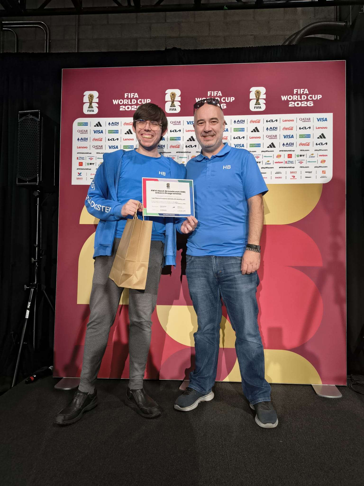

FIFA HBS CCR Assistant

This article is a work in progress, and as such, may contain incomplete or inaccurate information.
Course & Date: IAT 271 - Co-op Project - June-July 2026 (Summer 2026 Term).
Collaborators: Rachel, Haroon, Bilqees, Matyam, Rina, Sam, Suzy.
- Location:
- BC Place, Vancouver, BC, Canada
Tools Used: Lawo Commentary Units, Lawo interface, and lots of cabling.
Project Objective: Setup commentary units and assist commentators throughout the event matches.
- My Role & Contributions:
- Participated in behind-the-scenes production for an international event.
- Help host up to 27 commentators at a time in media tribunes.
- Manage cables, commentary boxes, and other technical aspects at the stadium.
- Monitor the commentary sound that is being sent internationally.
- Provide on-call quick response duty for any technical problems during matches.
- Challenges & Adaptations:
- Wide variety of languages and dialects spoken by commentators.
- Fixing technical issues with the commentary equipment as quickly as possible was crucial.
- Key Insights:
- Learning to communicate effectively across language barriers was challenging.
- While it was stressful, it was rewarding to be able to fix technical issues and watch commentators get right back to work.
Reflection: It was an amazing experience. It opened my eyes to a new area as a potential career path that I will keep pursuing with the same or similar opportunities.